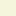

<!doctype html>
<html lang="en">
    <head>
        <meta charset="utf-8">
        <meta http-equiv="X-UA-Compatible" content="IE=edge">
        <meta name="viewport" content="initial-scale=1,user-scalable=no,maximum-scale=1,width=device-width">
        <meta name="mobile-web-app-capable" content="yes">
        <meta name="apple-mobile-web-app-capable" content="yes">
        <link rel="stylesheet" href="css/leaflet.css">
        <link rel="stylesheet" href="css/L.Control.Layers.Tree.css">
        <link rel="stylesheet" href="css/L.Control.Locate.min.css">
        <link rel="stylesheet" href="css/qgis2web.css">
        <link rel="stylesheet" href="css/fontawesome-all.min.css">
        <link rel="stylesheet" href="css/leaflet-control-geocoder.Geocoder.css">
        <style>
        html, body, #map {
            width: 100%;
            height: 100%;
            padding: 0;
            margin: 0;
        }
        </style>
        <title></title>
    </head>
    <body>
        <div id="map">
        </div>
        <script src="js/qgis2web_expressions.js"></script>
        <script src="js/leaflet.js"></script>
        <script src="js/L.Control.Layers.Tree.min.js"></script>
        <script src="js/L.Control.Locate.min.js"></script>
        <script src="js/leaflet.rotatedMarker.js"></script>
        <script src="js/leaflet.pattern.js"></script>
        <script src="js/leaflet-hash.js"></script>
        <script src="js/Autolinker.min.js"></script>
        <script src="js/rbush.min.js"></script>
        <script src="js/labelgun.min.js"></script>
        <script src="js/labels.js"></script>
        <script src="js/leaflet-control-geocoder.Geocoder.js"></script>
        <script src="data/2020Classification_1.js"></script>
        <script src="data/WardBoundary_2.js"></script>
        <script src="data/MunicipalityBoundary_3.js"></script>
        <script>
        var map = L.map('map', {
            zoomControl:false, maxZoom:28, minZoom:4
        }).fitBounds([[12.735911225181937,79.8720739161782],[13.283386224337104,80.7273962725055]]);
        var hash = new L.Hash(map);
        map.attributionControl.setPrefix('<a href="https://github.com/tomchadwin/qgis2web" target="_blank">qgis2web</a> &middot; <a href="https://leafletjs.com" title="A JS library for interactive maps">Leaflet</a> &middot; <a href="https://qgis.org">QGIS</a>');
        var autolinker = new Autolinker({truncate: {length: 30, location: 'smart'}});
        // remove popup's row if "visible-with-data"
        function removeEmptyRowsFromPopupContent(content, feature) {
         var tempDiv = document.createElement('div');
         tempDiv.innerHTML = content;
         var rows = tempDiv.querySelectorAll('tr');
         for (var i = 0; i < rows.length; i++) {
             var td = rows[i].querySelector('td.visible-with-data');
             var key = td ? td.id : '';
             if (td && td.classList.contains('visible-with-data') && feature.properties[key] == null) {
                 rows[i].parentNode.removeChild(rows[i]);
             }
         }
         return tempDiv.innerHTML;
        }
        // add class to format popup if it contains media
		function addClassToPopupIfMedia(content, popup) {
			var tempDiv = document.createElement('div');
			tempDiv.innerHTML = content;
			if (tempDiv.querySelector('td img')) {
				popup._contentNode.classList.add('media');
					// Delay to force the redraw
					setTimeout(function() {
						popup.update();
					}, 10);
			} else {
				popup._contentNode.classList.remove('media');
			}
		}
        var zoomControl = L.control.zoom({
            position: 'topleft'
        }).addTo(map);
        L.control.locate({locateOptions: {maxZoom: 19}}).addTo(map);
        var bounds_group = new L.featureGroup([]);
        function setBounds() {
        }
        map.createPane('pane_Basemap_0');
        map.getPane('pane_Basemap_0').style.zIndex = 400;
        var layer_Basemap_0 = L.tileLayer('http://www.google.cn/maps/vt?lyrs=m@189&gl=cn&x={x}&y={y}&z={z}', {
            pane: 'pane_Basemap_0',
            opacity: 1.0,
            attribution: '<a href="https://www.google.com/intl/zh-CN_cn/permissions/geoguidelines/attr-guide.html">地图数据 ©2016 Google</a>',
            minZoom: 4,
            maxZoom: 28,
            minNativeZoom: 0,
            maxNativeZoom: 21
        });
        layer_Basemap_0;
        map.addLayer(layer_Basemap_0);
        function pop_2020Classification_1(feature, layer) {
            var popupContent = '<table>\
                    <tr>\
                        <th scope="row">Class_Name</th>\
                        <td class="visible-with-data" id="Class_Name">' + (feature.properties['Class_Name'] !== null ? autolinker.link(String(feature.properties['Class_Name']).replace(/'/g, '\'').toLocaleString()) : '') + '</td>\
                    </tr>\
                </table>';
            var content = removeEmptyRowsFromPopupContent(popupContent, feature);
			layer.on('popupopen', function(e) {
				addClassToPopupIfMedia(content, e.popup);
			});
			layer.bindPopup(content, { maxHeight: 400 });
        }

        function style_2020Classification_1_0(feature) {
            switch(String(feature.properties['Class_Name'])) {
                case 'BARELAND':
                    return {
                pane: 'pane_2020Classification_1',
                stroke: false, 
                fill: true,
                fillOpacity: 1,
                fillColor: 'rgba(139,148,139,1.0)',
                interactive: true,
            }
                    break;
                case 'HIGH DENSITYURBAN':
                    return {
                pane: 'pane_2020Classification_1',
                stroke: false, 
                fill: true,
                fillOpacity: 1,
                fillColor: 'rgba(255,0,0,1.0)',
                interactive: true,
            }
                    break;
                case 'LOW DENSITY URBAN':
                    return {
                pane: 'pane_2020Classification_1',
                stroke: false, 
                fill: true,
                fillOpacity: 1,
                fillColor: 'rgba(255,192,203,1.0)',
                interactive: true,
            }
                    break;
                case 'SHRUB':
                    return {
                pane: 'pane_2020Classification_1',
                stroke: false, 
                fill: true,
                fillOpacity: 1,
                fillColor: 'rgba(245,245,220,1.0)',
                interactive: true,
            }
                    break;
                case 'VEGETTION':
                    return {
                pane: 'pane_2020Classification_1',
                stroke: false, 
                fill: true,
                fillOpacity: 1,
                fillColor: 'rgba(38,115,0,1.0)',
                interactive: true,
            }
                    break;
                case 'WATERBODY':
                    return {
                pane: 'pane_2020Classification_1',
                stroke: false, 
                fill: true,
                fillOpacity: 1,
                fillColor: 'rgba(0,0,255,1.0)',
                interactive: true,
            }
                    break;
            }
        }
        map.createPane('pane_2020Classification_1');
        map.getPane('pane_2020Classification_1').style.zIndex = 401;
        map.getPane('pane_2020Classification_1').style['mix-blend-mode'] = 'normal';
        var layer_2020Classification_1 = new L.geoJson(json_2020Classification_1, {
            attribution: '',
            interactive: true,
            dataVar: 'json_2020Classification_1',
            layerName: 'layer_2020Classification_1',
            pane: 'pane_2020Classification_1',
            onEachFeature: pop_2020Classification_1,
            style: style_2020Classification_1_0,
        });
        bounds_group.addLayer(layer_2020Classification_1);
        map.addLayer(layer_2020Classification_1);
        function pop_WardBoundary_2(feature, layer) {
            var popupContent = '<table>\
                    <tr>\
                        <td colspan="2">' + (feature.properties['Zone_No'] !== null ? autolinker.link(String(feature.properties['Zone_No']).replace(/'/g, '\'').toLocaleString()) : '') + '</td>\
                    </tr>\
                    <tr>\
                        <td colspan="2">' + (feature.properties['Ward_No'] !== null ? autolinker.link(String(feature.properties['Ward_No']).replace(/'/g, '\'').toLocaleString()) : '') + '</td>\
                    </tr>\
                    <tr>\
                        <td colspan="2">' + (feature.properties['Zone_Name'] !== null ? autolinker.link(String(feature.properties['Zone_Name']).replace(/'/g, '\'').toLocaleString()) : '') + '</td>\
                    </tr>\
                </table>';
            var content = removeEmptyRowsFromPopupContent(popupContent, feature);
			layer.on('popupopen', function(e) {
				addClassToPopupIfMedia(content, e.popup);
			});
			layer.bindPopup(content, { maxHeight: 400 });
        }

        function style_WardBoundary_2_0() {
            return {
                pane: 'pane_WardBoundary_2',
                opacity: 1,
                color: 'rgba(35,35,35,1.0)',
                dashArray: '5.0,1.0',
                lineCap: 'butt',
                lineJoin: 'miter',
                weight: 1.0, 
                fill: true,
                fillOpacity: 1,
                fillColor: 'rgba(231,113,72,0.0)',
                interactive: false,
            }
        }
        map.createPane('pane_WardBoundary_2');
        map.getPane('pane_WardBoundary_2').style.zIndex = 402;
        map.getPane('pane_WardBoundary_2').style['mix-blend-mode'] = 'normal';
        var layer_WardBoundary_2 = new L.geoJson(json_WardBoundary_2, {
            attribution: '',
            interactive: false,
            dataVar: 'json_WardBoundary_2',
            layerName: 'layer_WardBoundary_2',
            pane: 'pane_WardBoundary_2',
            onEachFeature: pop_WardBoundary_2,
            style: style_WardBoundary_2_0,
        });
        bounds_group.addLayer(layer_WardBoundary_2);
        map.addLayer(layer_WardBoundary_2);
        function pop_MunicipalityBoundary_3(feature, layer) {
            var popupContent = '<table>\
                    <tr>\
                        <td colspan="2">' + (feature.properties['Zone_No'] !== null ? autolinker.link(String(feature.properties['Zone_No']).replace(/'/g, '\'').toLocaleString()) : '') + '</td>\
                    </tr>\
                    <tr>\
                        <td colspan="2">' + (feature.properties['Ward_No'] !== null ? autolinker.link(String(feature.properties['Ward_No']).replace(/'/g, '\'').toLocaleString()) : '') + '</td>\
                    </tr>\
                    <tr>\
                        <td colspan="2">' + (feature.properties['Zone_Name'] !== null ? autolinker.link(String(feature.properties['Zone_Name']).replace(/'/g, '\'').toLocaleString()) : '') + '</td>\
                    </tr>\
                    <tr>\
                        <td colspan="2">' + (feature.properties['AREA'] !== null ? autolinker.link(String(feature.properties['AREA']).replace(/'/g, '\'').toLocaleString()) : '') + '</td>\
                    </tr>\
                    <tr>\
                        <td colspan="2">' + (feature.properties['PERIMETER'] !== null ? autolinker.link(String(feature.properties['PERIMETER']).replace(/'/g, '\'').toLocaleString()) : '') + '</td>\
                    </tr>\
                </table>';
            var content = removeEmptyRowsFromPopupContent(popupContent, feature);
			layer.on('popupopen', function(e) {
				addClassToPopupIfMedia(content, e.popup);
			});
			layer.bindPopup(content, { maxHeight: 400 });
        }

        function style_MunicipalityBoundary_3_0() {
            return {
                pane: 'pane_MunicipalityBoundary_3',
                opacity: 1,
                color: 'rgba(35,35,35,1.0)',
                dashArray: '',
                lineCap: 'butt',
                lineJoin: 'miter',
                weight: 1.0, 
                fill: true,
                fillOpacity: 1,
                fillColor: 'rgba(152,125,183,0.0)',
                interactive: false,
            }
        }
        map.createPane('pane_MunicipalityBoundary_3');
        map.getPane('pane_MunicipalityBoundary_3').style.zIndex = 403;
        map.getPane('pane_MunicipalityBoundary_3').style['mix-blend-mode'] = 'normal';
        var layer_MunicipalityBoundary_3 = new L.geoJson(json_MunicipalityBoundary_3, {
            attribution: '',
            interactive: false,
            dataVar: 'json_MunicipalityBoundary_3',
            layerName: 'layer_MunicipalityBoundary_3',
            pane: 'pane_MunicipalityBoundary_3',
            onEachFeature: pop_MunicipalityBoundary_3,
            style: style_MunicipalityBoundary_3_0,
        });
        bounds_group.addLayer(layer_MunicipalityBoundary_3);
        map.addLayer(layer_MunicipalityBoundary_3);
        var osmGeocoder = new L.Control.Geocoder({
            collapsed: true,
            position: 'topleft',
            text: 'Search',
            title: 'Testing'
        }).addTo(map);
        document.getElementsByClassName('leaflet-control-geocoder-icon')[0]
        .className += ' fa fa-search';
        document.getElementsByClassName('leaflet-control-geocoder-icon')[0]
        .title += 'Search for a place';
        var overlaysTree = [
            {label: ' Municipality Boundary', layer: layer_MunicipalityBoundary_3},
            {label: ' Ward Boundary', layer: layer_WardBoundary_2},
            {label: '2020 Classification <br /><table><tr><td style="text-align: center;"></td><td>BARELAND</td></tr><tr><td style="text-align: center;"></td><td>HIGH DENSITYURBAN</td></tr><tr><td style="text-align: center;"></td><td>LOW DENSITY URBAN</td></tr><tr><td style="text-align: center;"></td><td>SHRUB</td></tr><tr><td style="text-align: center;"></td><td>VEGETTION</td></tr><tr><td style="text-align: center;"></td><td>WATERBODY</td></tr></table>', layer: layer_2020Classification_1},
            {label: "Base map", layer: layer_Basemap_0},]
        var lay = L.control.layers.tree(null, overlaysTree,{
            //namedToggle: true,
            //selectorBack: false,
            //closedSymbol: '&#8862; &#x1f5c0;',
            //openedSymbol: '&#8863; &#x1f5c1;',
            //collapseAll: 'Collapse all',
            //expandAll: 'Expand all',
            collapsed: false, 
        });
        lay.addTo(map);
		document.addEventListener("DOMContentLoaded", function() {
            // set new Layers List height which considers toggle icon
            function newLayersListHeight() {
                var layerScrollbarElement = document.querySelector('.leaflet-control-layers-scrollbar');
                if (layerScrollbarElement) {
                    var layersListElement = document.querySelector('.leaflet-control-layers-list');
                    var originalHeight = layersListElement.style.height 
                        || window.getComputedStyle(layersListElement).height;
                    var newHeight = parseFloat(originalHeight) - 50;
                    layersListElement.style.height = newHeight + 'px';
                }
            }
            var isLayersListExpanded = true;
            var controlLayersElement = document.querySelector('.leaflet-control-layers');
            var toggleLayerControl = document.querySelector('.leaflet-control-layers-toggle');
            // toggle Collapsed/Expanded and apply new Layers List height
            toggleLayerControl.addEventListener('click', function() {
                if (isLayersListExpanded) {
                    controlLayersElement.classList.remove('leaflet-control-layers-expanded');
                } else {
                    controlLayersElement.classList.add('leaflet-control-layers-expanded');
                }
                isLayersListExpanded = !isLayersListExpanded;
                newLayersListHeight()
            });	
			// apply new Layers List height if toggle layerstree
			if (controlLayersElement) {
				controlLayersElement.addEventListener('click', function(event) {
					var toggleLayerHeaderPointer = event.target.closest('.leaflet-layerstree-header-pointer span');
					if (toggleLayerHeaderPointer) {
						newLayersListHeight();
					}
				});
			}
            // Collapsed/Expanded at Start to apply new height
            setTimeout(function() {
                toggleLayerControl.click();
            }, 10);
            setTimeout(function() {
                toggleLayerControl.click();
            }, 10);
            // Collapsed touch/small screen
            var isSmallScreen = window.innerWidth < 650;
            if (isSmallScreen) {
                setTimeout(function() {
                    controlLayersElement.classList.remove('leaflet-control-layers-expanded');
                    isLayersListExpanded = !isLayersListExpanded;
                }, 500);
            }  
        });       
        setBounds();
        </script>
    </body>
</html>
